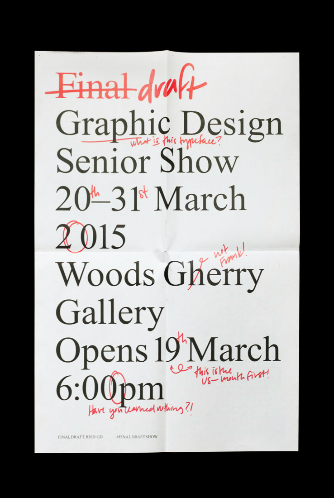
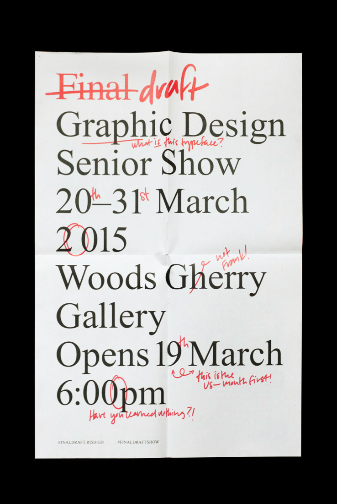

1 Copywriting by Rachel Ossip. Handwriting (throughout) by Chloe Scheffe. 2 The blueprints are of the gallery the show was installed in.
 

3 From bottom left to top right: Swarovski dog in dime bag, 'Fools' gold sticker, 'You Schmooze, You Lose' business card, 3D printed 'maybe' pin all by Alice Taranto; type specimen postcard by Inigo Lopez Vasquez; letterpressed card by Rachel Ossip; 'Knock On' wood sticker by Alice Taranto; 'Perhaps Maybe Quite Possibly Never' by Rachel Leung; sticker by Aleksandr Komyakov; stickers by Mina Park; 'Spinney Ball of Death' pin by Lizzy Gregory; 'chick' magnet by Alice Taranto; sticker by Aleksandr Komyakov; 'Lulz' neon acrylic stencil by Chloe Scheffe. Not pictured: keychain by Robin Hilkey (pictured in first image); 'A+' acrylic and elastic bracelet by Jeni Zhen.